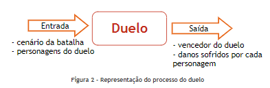

O duelo
A batalha é realizada em turnos de duelos diretos entre dois personagens, conforme foi descrito anteriormente. Porém, é preciso descrever com mais detalhes como se deve determinar o vencedor de cada duelo. Antes, deve-se observar que um duelo possui como informações de entrada: o cenário da batalha e os dois personagens do confronto com as suas características. Após o confronto, a informação de saída é o vencedordo confronto com os danos que sofreu e infringiu.Em outras palavras, conforme explicita a Figura 2, é preciso saber explicar o que ocorreu no duelo.
Figura 2 